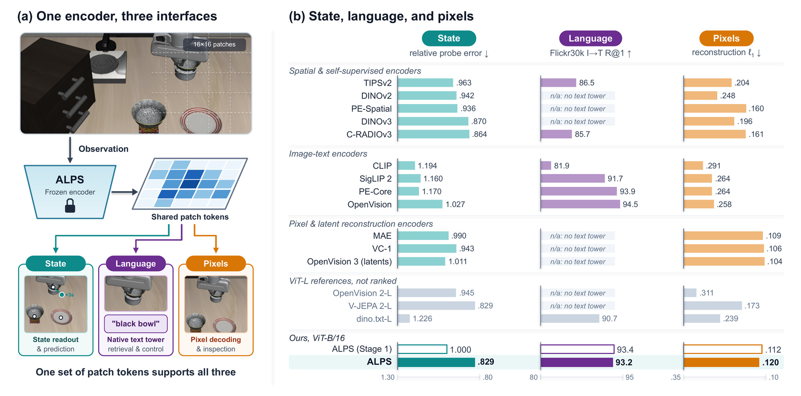
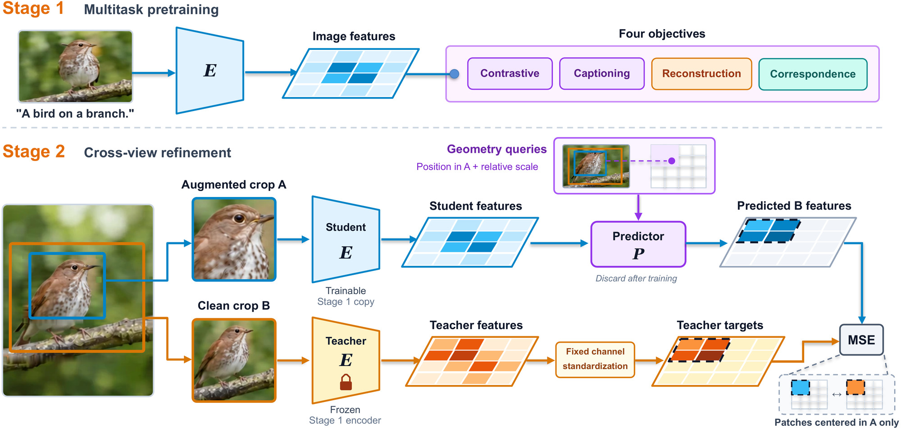
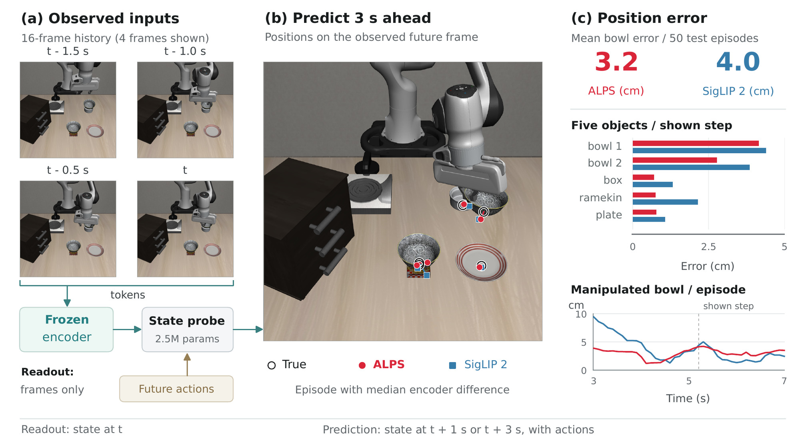
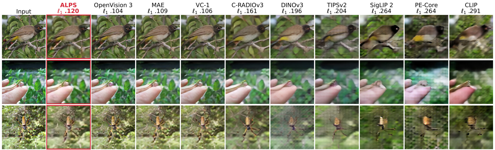
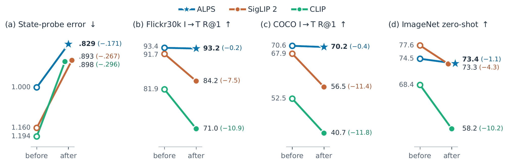
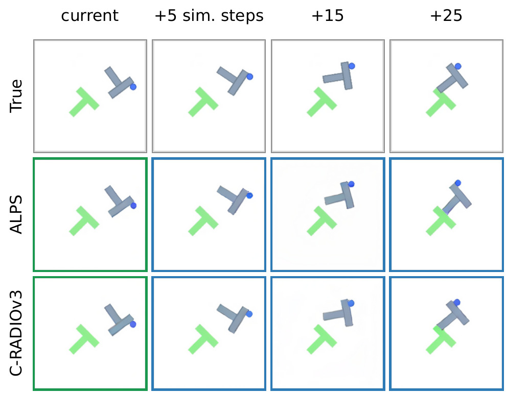

One representation for prediction, instruction, and inspection
World models predict how a scene changes in response to actions and use these predictions to plan. Many of them operate in the latent space of a frozen pretrained visual encoder. The encoder therefore decides what the world model can see. ALPS unifies physical-state information, native language alignment, and pixel reconstruction in a single set of patch tokens.
Lowest among the ViT-B encoders, matching the 3.5× larger V-JEPA 2-L.
Within 2 points of the best image-text encoders.
Lower than every compared encoder not trained to reconstruct pixels or latents.
No compared encoder is better than ALPS on all three.

World models turn visual representations into predictions and actions. We argue that their visual foundation should combine physical-state information, native language alignment, and pixel reconstruction, so that a single representation can support prediction, instruction, and inspection. However, existing encoders typically specialize in only one or two of these capabilities; we therefore introduce ALPS, a pretrained visual state encoder that unifies all three in a single set of patch tokens. Using only still images and text, we pretrain a ViT-B/16 from scratch with language, reconstruction, and spatial correspondence objectives, and then refine it via cross-view self-distillation. In a unified evaluation across fifteen public encoders, ALPS achieves the lowest aggregate LIBERO state-probe error among ViT-B models (matching the 3.5× larger V-JEPA 2-L) while maintaining strong language alignment and accurate pixel reconstruction. Downstream, frozen ALPS tokens reach the highest mean policy success on LIBERO (85.5%) when paired with our native text tower, match or exceed leading encoders on world-model planning across PushT, Wall, and Granular, and allow predicted future tokens to be decoded directly into pixels for visual inspection. We hope this work helps establish visual pretraining as a shared foundation for understanding, prediction, and action in world models.
Two-stage visual state pretraining
We pretrain our encoder in two stages. The first stage establishes language alignment, pixel reconstruction, and spatial features in a shared representation. We train a ViT-B/16 from scratch on image-text pairs with contrastive alignment, captioning, reconstruction, and dense correspondence objectives on the same patch tokens. The second stage then strengthens state information through cross-view self-distillation, training the encoder to predict scene content across changes in crop, scale, and appearance. From an augmented view, the student predicts a frozen first-stage teacher's patch tokens at corresponding locations in a clean view. Both stages train on still images and text alone, without video or interaction supervision.

One encoder for state, language, and pixels
We compare ALPS with fifteen public encoders, all frozen and evaluated under common protocols. ALPS achieves the lowest aggregate LIBERO state-probe error among ViT-B encoders, matching the 3.5× larger V-JEPA 2-L, while retaining strong language alignment and accurate pixel reconstruction.
| State probe (LIBERO, relative error ↓) | Language alignment ↑ | Reconstruction ↓ | |||||||||
|---|---|---|---|---|---|---|---|---|---|---|---|
| Encoder | readout | +1 s | +3 s | mean | IN-1k 0-shot | Flickr I→T | Flickr T→I | COCO I→T | COCO T→I | ℓ1 | LPIPS |
| Spatial & self-supervised encoders | |||||||||||
| TIPSv2-B/14 | .947 | .946 | .995 | .963 | 71.1 | 86.5 | 72.2 | 63.7 | 48.2 | .204 | .467 |
| DINOv2-B/14 | .916 | .901 | 1.010 | .942 | n/a | n/a | n/a | n/a | n/a | .248 | .535 |
| PE-Spatial-B/16 | 1.000 | .892 | .917 | .936 | n/a | n/a | n/a | n/a | n/a | .160 | .386 |
| DINOv3-B/16 | .860 | .911 | .840 | .870 | n/a | n/a | n/a | n/a | n/a | .196 | .424 |
| C-RADIOv3-B | .876 | .838 | .877 | .864 | 66.5 | 85.7 | 74.3 | 56.5 | 46.0 | .161 | .359 |
| Image-text encoders | |||||||||||
| CLIP-B/16 | 1.091 | 1.110 | 1.380 | 1.194 | 68.4 | 81.9 | 62.0 | 52.5 | 33.1 | .291 | .579 |
| SigLIP 2-B/16 | 1.149 | 1.202 | 1.130 | 1.160 | 77.6 | 91.7 | 78.1 | 67.9 | 52.4 | .264 | .541 |
| PE-Core-B/16 | 1.118 | 1.099 | 1.292 | 1.170 | 78.4 | 93.9 | 80.9 | 71.1 | 50.3 | .264 | .559 |
| OpenVision-B/16 | 1.042 | 1.008 | 1.032 | 1.027 | 73.3 | 94.5 | 78.9 | 71.3 | 51.3 | .258 | .551 |
| Pixel & latent reconstruction encoders | |||||||||||
| MAE-B/16 | .935 | 1.008 | 1.027 | .990 | n/a | n/a | n/a | n/a | n/a | .109 | .260 |
| VC-1-B | 1.064 | .841 | .924 | .943 | n/a | n/a | n/a | n/a | n/a | .106 | .258 |
| OpenVision 3-B | 1.029 | .934 | 1.071 | 1.011 | n/a | n/a | n/a | n/a | n/a | .104 | .243 |
| Larger encoders, ViT-L (304M to 330M parameters) | |||||||||||
| OpenVision 2-L/14 | .969 | .881 | .987 | .945 | n/a | n/a | n/a | n/a | n/a | .311 | .602 |
| V-JEPA 2-L/16 | .741 | .841 | .904 | .829 | n/a | n/a | n/a | n/a | n/a | .173 | .413 |
| dino.txt-L/14 | 1.090 | 1.170 | 1.418 | 1.226 | 81.6 | 90.7 | 75.8 | 64.9 | 46.7 | .239 | .552 |
| Ours, ViT-B/16 | |||||||||||
| ALPS (Stage 1) | 1.000 | 1.000 | 1.000 | 1.000 | 74.5 | 93.4 | 79.4 | 70.6 | 52.0 | .112 | .365 |
| ALPS | .842 | .834 | .813 | .829 | 73.4 | 93.2 | 78.9 | 70.2 | 51.9 | .120 | .372 |
Table 1. Frozen encoders on state, language, and pixels: ALPS has the lowest state-probe error among the ViT-B encoders. State probe: LIBERO position error relative to ALPS (Stage 1); language: each model's own text tower. Bold: best ViT-B encoder in each column, ALPS (Stage 1) not ranked; gray: ViT-L references; n/a: no released text tower (not zero).
Physical state, read from frozen tokens

Pixels, decoded from frozen tokens

The refinement strengthens the state and keeps language
Cross-view refinement reduces state-probe error by 17% while changing image-text retrieval by at most 0.5 points, and also improves world-model prediction. In contrast, the same refinement lowers ImageNet zero-shot accuracy and image-to-text retrieval by 4–12 points for SigLIP 2 and CLIP.

Control, planning, and prediction on frozen tokens
Frozen ALPS tokens achieve the highest mean policy success in our LIBERO comparison when paired with our native text tower, and support leading planning performance on PushT, Wall, and Granular. Predicted future tokens can also be decoded into images for inspection.
| Encoder | Long | Goal | Spatial | Object | mean |
|---|---|---|---|---|---|
| Instruction embedded by BERT | |||||
| CLIP-B/16 | 56.3 | 74.1 | 76.5 | 93.2 | 75.0 |
| SigLIP 2-B/16 | 72.3 | 78.8 | 84.1 | 90.3 | 81.4 |
| DINOv2-B/14 | 66.5 | 78.6 | 80.5 | 88.1 | 78.4 |
| DINOv3-B/16 | 68.4 | 72.7 | 80.7 | 94.4 | 79.0 |
| C-RADIOv3-B | 66.0 | 79.9 | 74.9 | 92.3 | 78.2 |
| ALPS (Stage 1) | 68.9 | 84.3 | 76.8 | 94.3 | 81.1 |
| ALPS | 69.7 | 85.1 | 86.5 | 92.2 | 83.4 |
| Instruction embedded by the encoder's own text tower | |||||
| CLIP-B/16 | 61.5 | 84.3 | 79.1 | 91.9 | 79.2 |
| SigLIP 2-B/16 | 73.3 | 90.2 | 84.1 | 91.7 | 84.8 |
| C-RADIOv3-B | 73.4 | 89.5 | 82.9 | 81.4 | 81.8 |
| ALPS | 78.5 | 87.4 | 82.6 | 93.7 | 85.5 |
Table 2. Policy learning on LIBERO with frozen tokens: ALPS achieves the highest mean success with both BERT and its native text tower. Success in % (mean of three evaluations, 50 rollouts per task); instructions from BERT (top) or each encoder's own text tower (bottom). Bold: best in each block.
| Encoder | PushT success | PushT dist. | Wall success | Wall dist. | PointMaze success | Reacher success | Granular Chamfer | Rope Chamfer |
|---|---|---|---|---|---|---|---|---|
| DINOv2-B/14 | 88 | 25.0 | 92 | 3.62 | 100 | 76.7 | .211 | .701 |
| DINOv3-B/16 | 88 | 24.2 | 90 | 3.69 | 100 | 86.0 | .275 | .681 |
| C-RADIOv3-B | 90 | 20.2 | 90 | 3.31 | 100 | 82.0 | .180 | .558 |
| SigLIP 2-B/16 | 84 | 29.0 | 88 | 3.73 | 100 | 74.0 | .230 | .848 |
| ALPS (Stage 1) | 88 | 24.0 | 90 | 3.43 | 100 | 76.0 | .324 | .943 |
| ALPS | 90 | 23.4 | 92 | 3.21 | 100 | 78.7 | .176 | .750 |
Table 3. Planning with world models trained on frozen tokens: ALPS leads or ties the best results on PushT, Wall, and Granular. DINO-WM on PushT, Wall, PointMaze, Granular, and Rope and LeWorldModel on Reacher, trained with one recipe; goals evaluated: 50 (Granular 10); Reacher: mean of three planner seeds. Success in %; dist.: final-to-goal state distance; Chamfer: final-to-goal particle distance. Bold: best of a column; none if all tie.

Use ALPS in a few lines
The repository holds the PyTorch inference package, the unified evaluation, and the JAX and PyTorch training code. The weights and the eight ALPS policies of the LIBERO experiments are on Hugging Face.
git clone https://github.com/UCSC-VLAA/ALPS.git && cd ALPS
pip install -e . # torch, numpy, pillowimport torch, alps from PIL import Image model = alps.load("alps-vitb16") # downloads alps_vitb16.safetensors from Hugging Face x = alps.center_crop_transform(Image.open("image.jpg")) # [1, 3, 224, 224], normalized with torch.no_grad(): out = model.encode_image(x) z = out["tokens"] # [1, 196, 768] raw patch tokens: the visual state img = model.image_embedding(tokens=z) # L2-normalized txt = model.text_embedding(["a robot arm opens the top drawer", "a photo of a dog"]) probs = (model.contrastive_scale() * img @ txt.T).softmax(-1)
| Model | File | Description |
|---|---|---|
alps-vitb16 | alps_vitb16.safetensors | ALPS, the model of the paper (Stage 1 + Stage 2) |
alps-stage1-vitb16 | alps_stage1_vitb16.safetensors | ALPS (Stage 1), before cross-view refinement |
GitHub: UCSC-VLAA/ALPS · Hugging Face: UCSC-VLAA/ALPS · License: Apache-2.0
BibTeX
@article{liu2026alps,
title = {ALPS: Visual State Encoders for World Models},
author = {Liu, Yanqing and Zhang, Letian and Liu, Chengzhi and Wang, Zijun and Mei, Jieru and Fei, Hongliang and Zhou, Yuyin and Xie, Cihang},
journal = {arXiv preprint arXiv:2610.30120},
year = {2026}
}We would like to thank the TPU Research Cloud (TRC) program, the Google Cloud Research Credits program, and the Google TPU Builder Award for supporting our computing needs.